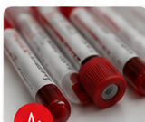

Clinical review required
No medication pathway starts without licensed-provider evaluation.
Performance health. Medically guided.
BASEmd connects adults with independent licensed clinicians for weight management, hormone optimization, performance labs, and longevity-focused support.
BASEmd is a brand and access platform. Clinical decisions, prescribing, lab interpretation, and pharmacy fulfillment are handled by independent licensed partners.
No medication pathway starts without licensed-provider evaluation.
BASEmd stays in the brand, marketing, education, and access-support lane.
If prescribed, products are fulfilled by licensed pharmacy partners.
Build handoff
The same `/BASEmd/` link now includes the finished GTM plan, branded presentation, proforma model, mock ad matrix, launch timeline, and website execution notes.
Complete
Use these tabs as the operating handoff for making BASEmd real while keeping BASEmd in the brand, education, access, marketing, and non-clinical support role.
Branded presentation
The deck frames what BASEmd is and is not, the legal and operating sequence, partner stack, website/funnel target, 90-day launch timeline, startup cost structure, proforma logic, GTM plan, mock ads, risk register, and next 10 actions.
Formula-driven proforma
The workbook includes Dashboard, Inputs, Revenue Model, Startup Costs, Timeline, GTM Plan, Mock Ads, and Sources tabs. `Inputs!B5` is the adjustable monthly paid-media budget driver; changing it updates spend, impressions, clicks, assessments, clinical starts, active members, revenue, CAC, EBITDA, and dashboard KPIs.
Genuine GTM marketing plan
The GTM plan covers Google Search, Meta/Instagram, SEO and clinician-reviewed education content, Email/SMS nurture, partnerships with gyms/coaches/races/clinics, YouTube education, and privacy-approved retargeting only. Spend scales after CAC, assessment quality, partner capacity, and retention are visible.
Mock ads
The mock ad tab includes channel, objective, audience, hook, primary text, headline, CTA, visual direction, and compliance guardrail. It avoids guaranteed outcomes, diagnosis language, before/after framing, guaranteed prescription access, and per-prescription economics.
Website execution
The website uses the last BASEmd homepage image as the starting point and moves toward the provided model-site conversion architecture: strong hero, product/program navigation, program cards, how-it-works steps, trust/quality section, CTA banner, and footer disclaimers without copying the model site text, code, images, testimonials, or brand elements.
Timeline
The timeline stages executive decisions, legal architecture, partner sourcing, website build, funnel and CRM setup, clinical handoff, creative testing, soft launch, scale gate, and expansion. The sequence keeps marketing spend behind structure, contract, privacy, and partner-readiness gates.
Explore by program
Original BASEmd program architecture modeled around demand: weight, hormones, labs, longevity, and legal performance support.
Provider-reviewed metabolic care for adults seeking structured weight-loss support.
Start assessment →Lab-informed review of testosterone and related biomarkers with ongoing clinician guidance.
Check eligibility →Education-first consult pathways focused on legal, clinically appropriate longevity and recovery support.
Learn more →
Biomarker panels designed to help adults understand metabolic, hormonal, recovery, and wellness baselines.
View lab options →Private, provider-reviewed support for energy, libido, body composition, and recovery concerns.
Get started →How it works
Complete a confidential assessment about your goals, health history, lifestyle, and location.
A licensed clinician reviews your information and may recommend labs or treatment options.
If prescribed, medication is fulfilled by a licensed pharmacy partner and shipped to you.
Why BASEmd
Care is evaluated by independent, licensed U.S. clinicians operating under their own clinical protocols.
Medication fulfillment, when clinically appropriate, is handled by licensed pharmacy partners.
Programs are built around baseline data, adherence, performance, recovery, and measurable progress.
Education
BASEmd content should explain metabolic health, GLP-1 evaluation, testosterone review, biomarkers, recovery, and longevity without promising outcomes or selling prescriptions directly.
Ready to get started?
Route users by goal, location, and eligibility. Keep clinical decision-making with licensed partners.
Partner model
The launch architecture should use contracts with independent clinical, lab, and pharmacy partners. BASEmd controls brand, funnel, content, and non-clinical support only.